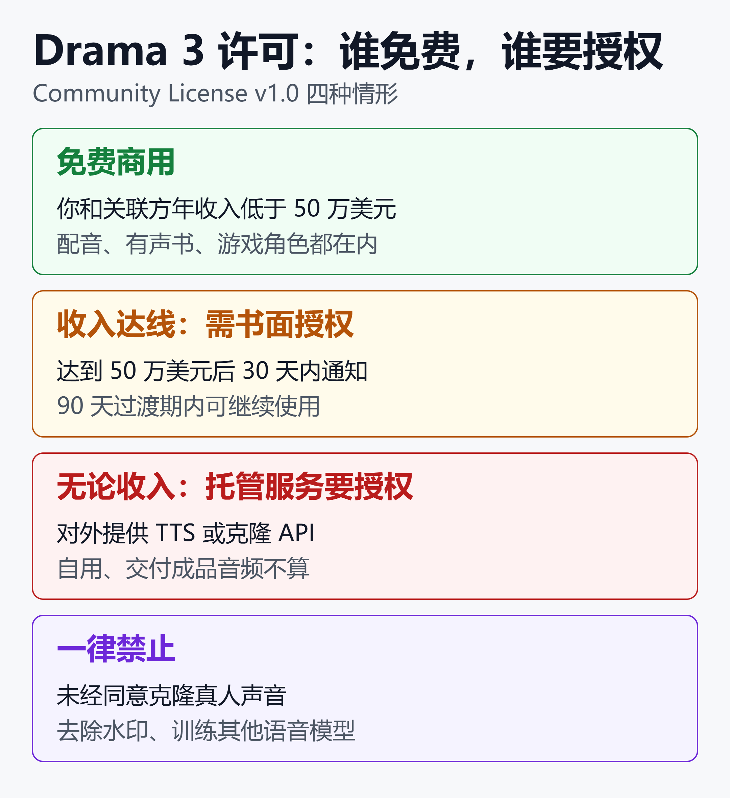

Drama 3 发音准确率超 ElevenLabs，免费商用却卡在 50 万美元线
在 Artificial Analysis 的发音稳健性（Pronunciation Robustness）测试中，Fish Audio 新发布的 Drama 3 得分 93.2%，排在 ElevenLabs 的 Eleven v4（91.7%）和 Eleven v4 Turbo（90.1%）之前。这些数字来自榜单经厂商和媒体的转述，未经独立复现。
但同一套榜单里还有另一张成绩单。让听众盲选更喜欢哪个声音时，Drama 3 排第 10；在受控声音竞技场里排第 14。它是目前最好的开放权重 TTS，但不是最好听的 TTS。
再加一条许可线：你和关联方的年收入低于 50 万美元，可以免费商用；超过之后要另行授权。对外提供 TTS 接口，无论收入多少都要授权。
Drama 3 于 2026 年 10 月 13 日发布，主打“导演式”控制：在台词里用方括号写表演指令，用成对标签把效果限定到几个词，一次请求生成最多 16 个角色的整场戏。
本文按落地顺序梳理：模型规格、“词级控制”怎么写、榜单怎么读、许可边界、部署门槛，以及五类适合的场景。
一、Drama 3 是什么：35B 参数，每次只用 3B
Drama 3 是 Fish Audio 的新一代文本转语音模型，面向多角色场景和长篇内容。它支持多说话人生成、声音克隆和自然语言控制。
| 项目 | 规格 |
|---|---|
| 发布日期 | 2026 年 10 月 13 日 |
| 总参数 | 35B（MoE） |
| 每 token 激活 | 约 3B |
| 注意力 | 全注意力加线性注意力混合 |
| 音频解码 | 10 码本，44.1kHz |
| 权重精度 | 专家 FP8，其余 bf16 |
| 语言 | 83 种 |
| 单段角色数 | 最多 16 个 |
| 权重体积 | 约 40GB |
“35B 总参数、3B 激活”是混合专家（MoE）结构的典型取舍。据媒体对技术报告的整理，每个 token 只经过 256 个路由专家中的 8 个，外加 1 个共享专家，骨干由 Qwen3.5-35B-A3B 的语言模型初始化。
这带来速度优势。技术报告称，Drama 3 单流解码达到每秒 271 帧，上一代 S2 为 177 帧，而 Drama 3 的参数量是 S2 的 7 倍以上。
为什么它“会演”
Drama 3 的训练分三阶段预训练、指令微调和强化学习，强化学习只用一个学习到的人类偏好模型作为奖励。
这个设计有明确的动机。多数语音模型用“容易被转写”和“像参考音”作奖励，一句要求的笑声或耳语，会因为难转写而被扣分。改用偏好奖励后，表现力强的读法不再被当作错误。
这是厂商的训练思路说明，未经独立消融实验验证。
二、“词级控制”到底怎么写
先澄清一点：行内标签并不是 Drama 3 首创。上一代 S2 已经支持 [whisper]、[excited] 这类子词级标签。
Drama 3 新增的是三件事：用自然语言描述表演、用成对标签限定作用范围，以及在同一个模型里完成多轮修改、场景配音和流式文本输入。
| 想要的效果 | 写法 | 作用范围 |
|---|---|---|
| 整句语气 | 方括号里写描述 | 到下一个指令为止 |
| 声音与停顿 | [shaky breath] |
所在位置 |
| 限定到词 | <whisper>…</whisper> |
标签内的词 |
| 句内换语言 | <french>…</french> |
标签内（实验性） |
| 固定读音 | 音素标签 | 标签内的词 |
方括号：像给演员写简报
方括号写在它要作用的词前面。官方的建议是按给配音演员写简报的方式来写：情绪、意图、节奏，或者角色在对谁说话。
下面三行是三种独立写法，改写自官方文档示例：
[barely holding it together, forcing a smile] I'm fine.
I'm fine. [shaky breath] Really. [small laugh] Go on.
I'm fine. Really. <whisper>Go on without me.</whisper>
第一种写整体语气，第二种在句中插入声音，第三种只让最后几个词变成耳语。三种可以在同一行里混用。
指令的语言不必和台词一致。官方文档给出过中文指令配英文台词的写法：
[像是在强忍着眼泪，却努力笑着] I'm fine. Really.
官方示例以英文台词为主，中文台词下的指令遵循程度，目前缺少公开的独立评测，建议用自己的稿子实测。
句中换情绪
同一行里写多个方括号，朗读会在指令出现的位置转向。下面的示例改写自发布方提供的惊悚台词：
[breathless, speaking fast] Turn off the lights.
[voice drops to a terrified whisper] Stay quiet.
[slow, deadly serious] <emphasis>Do not</emphasis> open it.
三行依次是急促、压低成耳语、缓慢而严肃。最后一行再用 <emphasis> 把“Do not”单独加重。
成对标签目前支持七个：<whisper>、<emphasis>、<soft>、<fast>、<slow>、<stress>、<forceful>。
多角色：一次请求一整场戏
多说话人用 <|speaker:0|> 到 <|speaker:15|> 标记，最多 16 个角色。请求里按角色顺序传入一组声音 ID，第 N 个标签对应第 N 个声音。
<|speaker:0|>[calm] The ship had been silent.
<|speaker:1|>[low, tired] Status report.
<|speaker:2|>[panicked] It will <emphasis>blow</emphasis>.
实际请求里，这些轮次拼成同一个 text 字符串。调用方式沿用现有的 POST /v1/tts，只需把请求头 model 设为 drama-3：
curl https://api.fish.audio/v1/tts \
-H "Authorization: Bearer $FISH_API_KEY" \
-H "Content-Type: application/json" \
-H "model: drama-3" \
-d @scene.json --output scene.mp3
scene.json 的结构如下，text 为上面各轮拼接（已省略）：
{
"text": "<|speaker:0|>...<|speaker:1|>...",
"reference_id": ["id_0", "id_1", "id_2"],
"format": "mp3"
}
有一个容易踩的坑：如果 model 请求头缺失或拼错，请求不会报错，而是回退到 s2.1-pro。音频照常生成、照常计费，但用的不是 Drama 3。如果加了方括号指令，生成的语音却听起来平淡、没有表现力，先检查这个请求头。
发音与语言切换
Drama 3 兼容已有的音素标签，用于固定人名、术语的读法。音素体系随语言而变：英文用 CMU Arpabet，中文用拼音，日文用罗马字。
句内语言切换（例如英文句子里嵌一句法语）标注为实验性，效果因语言和声音而异。官方建议使用能流利说两种语言的克隆声源，并且只包裹需要切换语言的那几个词。
三、数据怎么读：发音第一，听感第十
榜单数字要拆开看，因为两张榜测的是两件事。
发音稳健性：读对难词
这项测试考察品牌名、数字、代码、依赖上下文的多音字等，由人工听评确认。总分对比如下：
| 模型 | 发音稳健性 |
|---|---|
| Drama 3 | 93.2% |
| Eleven v4 | 91.7% |
| Eleven v4 Turbo | 90.1% |
拆成分项后，进步集中在专名和多音字上。对比对象是 Fish Audio 自家的上一代 S2.1 Pro，数据取自官方发布文章：
| 朗读内容 | Drama 3 | S2.1 Pro |
|---|---|---|
| 品牌地名术语 | 95.9% | 87.3% |
| 上下文读音 | 95.3% | 86.1% |
| 数字日期单位 | 93.6% | 92.7% |
| 代码路径邮箱 | 86.3% | 79.4% |
| 总分 | 93.2% | 88.1% |
数字、日期、单位这一项几乎没有提升（93.6% 对 92.7%），而代码、路径、邮箱仍是最弱项，只有 86.3%。语音客服要念订单号和邮箱地址时，这一项最值得单独测试。
听感偏好：好不好听
换成“听众盲选更喜欢哪个声音”，位置就变了。Drama 3 在 Provider Voice 竞技场的 Elo 为 1243，共 1857 场对战，排第 10；在受控声音竞技场排第 14。
相比 S2.1 Pro，它的 Elo 提高了 101 分，进步明显。但仍有九个模型在整体听感上赢得更多盲选。
OpenRouter 页面引用的另一个第三方榜单也指向类似的位置。在 Design Arena 的音频真实感（Audiorealism）评测里，Drama 3 的 Elo 为 950，胜率 33.5%，页面标注为 Top 67%。这是另一套评测方法和样本，不能与上面的 Elo 直接比较，但同样说明它在偏好类评测中并非领先。
这两张榜的差异，对应两类需求：
- 报号码、药名、网址的语音 Agent，重视“读对”，发音榜更有参考价值。
- 有声书、广播剧、配音，重视“好听”和稳定，听感榜和自己的试听更重要。
按榜单分类，Drama 3 是开放权重模型里排名最高的，这是它的准确定位：开放权重第一，而不是所有模型第一。
速度：单流首包不到 100 毫秒
下表是官方在单张 H200 上的流式实测，用 Seed-TTS 英文提示克隆声音，RTF 小于 1 表示生成快于播放：
| 并发数 | 首包延迟 | RTF |
|---|---|---|
| 1 | 88.9 ms | 0.131 |
| 16 | 210.1 ms | 0.373 |
| 64 | 450.9 ms | 0.801 |
单流首包约 89 毫秒，64 并发时 RTF 仍低于 1。这是厂商在自家条件下的数据，换硬件和提示后会有差异。
每次渲染都不一样
官方文档承认“takes vary”，同一句话每次渲染的表演不同。对写好稿子一次出一章的创作者，这不是问题：多渲染几遍，挑最好的一条。
对每天自动生成成千上万条语音、没有人逐条试听的流水线，这是真实的成本。后文的场景部分会回到这一点。
四、能不能商用：50 万美元线和三条边界
Drama 3 使用 Fish Audio Community License v1.0（2026 年 10 月 13 日生效）。官方的说法是“open-weight 而非 open source”，所以本文一律称“开放权重”。

这张图的结论是：年收入低于 50 万美元可以免费商用；收入达线后需要书面授权；对外提供托管 TTS 服务，无论收入多少都要授权；有几类用途被一律禁止。
收入线怎么算
“年收入”指你和关联方合计、过去 12 个月来自所有业务的总收入，不只是来自 Drama 3 的那部分。达到 50 万美元后，需要在 30 天内书面通知 Fish Audio。此后有 90 天过渡期，期间原有的商用方式可以继续。过渡期结束后，需要单独的书面授权。
如果收入之后回落到线以下，免费商用的许可会重新生效。
边界一：托管服务始终要授权
许可里的“托管服务”指让第三方提交文本、音频或声音样本来生成语音，包括 API、SDK、模型托管，以及以文字转语音、配音、声音克隆为主要功能的网站或应用。
下面三种情形，许可明确说不算托管服务：
- 为你自己创作、挑选或控制的内容生成语音，例如旁白、配音、游戏或应用角色、助手的语音回复。
- 作为代理、工作室或自由职业者，自己操作模型、逐次下达生成指令，只向客户交付成品音频。
- 不盈利、不作为生产服务宣传的研究演示，例如 Hugging Face Space。
换句话说，给客户做有声书和配音是允许的；做一个让用户自助生成配音的网站，就越线了。
边界二：交付拷贝时，客户的收入也算
这一条容易漏看。如果你为某个第三方部署、安装或运营 Drama 3，或把模型副本交给对方，用于对方的产品、服务或内部运营（例如承包商、集成商、顾问），免费许可只在对方的年收入同样低于 50 万美元时才覆盖这项工作。
两种情况不受影响：只交付你自己生成的输出（如音频文件），以及把你自己的产品提供给不拿到模型副本的终端用户。
所以，给大客户做私有化部署，和给大客户做配音成品，在许可上是两回事。
边界三：禁止项与署名义务
以下用途被一律禁止：
- 未经同意生成可识别真人的模仿声音（未成年人需监护人同意，已故者需权利人同意）。
- 冒充个人或机构进行欺骗、诈骗、骚扰，或违反电话营销、自动外呼法规的呼叫。
- 生成涉及未成年人的性内容。
- 有意移除、绕过或遮蔽模型加入的水印或来源标记。
- 用模型或其输出创建、训练、蒸馏或改进任何基础生成式模型，以及任何语音、音频生成模型。
分发模型副本或衍生版本时，需要附上协议副本，并在 Notice 文件里保留署名声明。凡是分发或提供使用了该模型的产品或服务，需要在相关网站、界面、博文、关于页或文档里显著标注“Built with Fish Audio”。
输出的归属方面，协议写明在法律允许的范围内，输出归你所有。
Hugging Face 页面右侧的许可标签与仓库里的 LICENSE 文件写法不一致，应以 LICENSE 文件中的 Community License v1.0 为准。上一代 S2 仍然沿用旧的 Research License。以上是对协议条款的梳理，不构成法律意见，涉及商用请以原文和法务意见为准。
API 价格与成本估算
如果不自建，可以直接调用托管 API。目前有两个渠道：Fish Audio 官方 API，以及 OpenRouter 上的 fish-audio/drama-3。
| 渠道 | 价格 | 备注 |
|---|---|---|
| 官方首发价 | $10/百万字符 | 至 11 月 12 日 |
| 官方原价 | $50/百万字符 | 11 月 12 日后 |
| OpenRouter 现价 | $2/百万字节 | 页面标 80% 折扣 |
| OpenRouter 标价 | $10/百万字节 | 折扣前 |
| S2.1 Pro | $15/百万字节 | 官方与 OpenRouter 一致 |
两个渠道的价格不能直接相比，因为计价单位不同：官方发布文章按字符计价，OpenRouter 按 UTF-8 字节计价。OpenRouter 页面上折扣的截止时间没有标注，官方首发价则写明到 11 月 12 日。官方定价页在发布初期尚未收录 Drama 3，官方价格来自发布文章，以官网和 OpenRouter 页面的实时显示为准。
对英文文本，一个字符约等于一个字节，OpenRouter 的现价约为官方首发价的五分之一。中文要换算：一个汉字约占 3 字节，100 万个汉字约合 300 万字节。按 OpenRouter 的标价约 $30，按现价约 $6；S2.1 Pro 同样的文本约 $45。
用 eesel 的示意估算：一部约 9 万英文词的小说约 50 万字符。按官方价，首发价约 5 美元，原价约 25 美元；按 OpenRouter，现价约 1 美元，标价约 5 美元；S2.1 Pro 约 7.5 美元。每章渲染三遍挑最优，成本再乘三。
OpenRouter 的调用沿用 OpenAI 风格：向 /api/v1/audio/speech 发请求，model 填 fish-audio/drama-3，返回原始音频流。页面介绍同样支持方括号指令、成对标签、多说话人和音素标签。
这个量级对创作者个人不算贵。平台按月处理上千万字时，应按折扣结束后的价格预算。
五、本地部署：权重 40GB，别指望笔记本
官方权重约 40GB，分 8 个 safetensors 分片，另有 1.9GB 的编解码器。官方支持 SGLang-Omni 和 vLLM-Omni 两种服务方式。
SGLang-Omni 的启动命令：
sgl-omni serve \
--model-path fishaudio/drama-3 \
--port 8000
vLLM-Omni 的启动命令：
vllm serve fishaudio/drama-3 --omni --port 8091
SGLang-Omni 提供 OpenAI 风格的 /v1/audio/speech 接口，覆盖普通合成、参考音克隆和 PCM 流式输出。默认配置把预处理、引擎和声码器放在同一张 GPU 上；并发很高时，把声码器挪到第二张 GPU，官方实测 256 路并发下吞吐提升约 72%，首包延迟中位数下降约 37%。
显存门槛与社区量化
官方模型卡没有给出单卡显存下限。社区帖子里的说法是 48GB 显卡是起点，有用户在两张 RTX 3090 上跑通，占用约 39GB。
社区已经出现多种非官方转换：
| 方案 | 体量 | 性质 |
|---|---|---|
| 官方 FP8 权重 | 约 40GB | 官方 |
| 社区 int4 | 约 25.9GB | 非官方 |
| 社区 Q4 | 约 21.4GiB 显存 | 非官方 |
| 剪枝加 3bit GGUF | 称可装入 12GB | 作者自述 |
| ComfyUI 本地加载 | 专家驻留内存 | 非官方 |
最后一种方案把 MoE 专家放在系统内存，作者在 24GB 显存加 64GB 内存的笔记本上做过验证。macOS 方面也有 MLX 版本，提供 3bit、4bit 和 bf16。
这些转换都未经 Fish Audio 发布或背书。量化和剪枝对音质、指令遵循的损失，目前缺少可靠的对比数据，上线前必须自己听评。社区衍生版同样受 Community License 约束，需要保留署名并说明修改内容。
另外要注意，ComfyUI 官方的 Fish Audio 合作节点已加入 drama-3 选项，支持方括号指令、词级标签和 @Voice1、@Voice2 多角色写法。但合作节点调用的是 Fish Audio API，需要密钥，不会占用本地 GPU。
六、应用场景：哪里适合，哪里要谨慎
官方新闻稿列出的方向有：广播剧与互动媒体、有声书与多语言配音、游戏与动画、AI 陪伴、内容创作平台。结合模型特性和许可条款，下面按五类场景拆开看。
有声书与广播剧：最对口
长文本自动分块并支持逐块流式输出，多角色一次出，句中情绪可以按稿子标注。这是 Drama 3 设计时最先考虑的场景。
两点限制要提前知道。其一，“单个词重新生成而保留两侧音频”的音频修补功能，目前仍在邀请制测试，编辑 API 尚未公开，现阶段发现一个词读错，只能重渲染整条再挑选。其二，每次渲染都有差异，建议每段多出几条，留最好的一条。
好处是流程友好：用 Auto Tag（网页端的自动标注功能）为无标注的剧本起草初版指令，再人工改。
多语言配音与短视频
83 种语言，加上“指令语言可以和台词不同”，让一份中文表演指令可以作用于多种语言的台词。短视频团队可以把表演要求写进剧本文件，而不是逐条拖滑块。
句内语言切换仍是实验性功能，教学类内容（外语老师夹带示范词）可以先试，正式发行前需要逐语种听评。
游戏与动画角色
16 个角色同台、对白一次生成，适合预生成的剧情对话。许可里明确把“游戏或应用角色”的语音嵌入自家产品，列为不算托管服务的用法，所以独立游戏团队在收入线以下，可以按这一条款使用。
不建议直接用在需要实时生成、无法预览的对话里：每次渲染的差异，会让同一句台词的表演每次不同。预生成并挑选，比实时生成更稳。
语音 Agent 与客服播报
发音稳健性第一，对念订单号、药名、网址有价值。单流首包不到 100 毫秒，也适合流式输出。
要提醒的有两点。其一，代码、路径、邮箱这一项仍是最弱的，只有 86.3%。其二，同一句话每次生成的读法都不一样；有声书可以多生成几遍挑最好的，客服通话却是实时生成、直接播给用户，中间没有人试听把关，读得不好的那一次也会被用户听到。直接接到客服热线前，应先用真实话术批量测试。如果是自建语音 Agent 的整体架构，可参考 自建语音 Agent 实战指南：HuggingFace speech-to-speech 从部署到中文适配。
AI 陪伴与内容平台
这类产品容易踩许可线。如果产品里的角色语音是平台自己生成、自己控制的，属于“你自己的产品的语音回复”，不算托管服务。如果让用户上传台词或声音样本、自助生成语音，并且文字转语音是主要功能，就落入托管服务，需要单独授权。
另一边是合规。声音克隆必须获得被克隆者同意，水印不能移除。这些条款落到产品里，就是上传授权流程和水印保留机制。相关工程做法可以参考 给 AI 生成内容加水印并校验：从 GB 45438 到 C2PA、SynthID、AudioSeal 的工程落地手册 和 AI技术的攻与防：深度伪造五大攻击场景与企业防御技术全解析2026。
七、上手清单
先确认请求头。model: drama-3 写错会静默回退，没有任何报错。
指令要写得像演员简报。写情绪、意图、节奏和对话对象，比单个形容词更稳。
需要精确到词的效果，用成对标签；数字、专名、术语，用音素标签固定读法。
同一条台词多渲染几次，听完再选。需要批量自动生成时，把试听环节放进流程里，而不是省掉。
商用前算清三件事：你和关联方的年收入是否低于线；是否有人通过你的产品自助生成语音；是否要给客户交付模型副本。
小结
Drama 3 的价值在于，它把“导演式”控制放进了可下载的权重里：方括号写表演，成对标签限定到词，多角色一次生成。
它的位置也很清楚：发音稳健性榜单第一，开放权重里排名最高，但听感偏好榜只排第 10。每次渲染都有差异，音频修补和交互改稿还没有全面开放。
许可是第二个关键。收入低于 50 万美元，做有声书、配音、游戏角色都没有问题；做对外 TTS 服务、给大客户交付模型副本，则必须走商务授权。
对个人创作者和小团队，值得一试；对要把它接进高并发生产环境的团队，应先做自己的试听和压力测试，再决定自建还是调用 API。
如果想系统比较商用与开源 TTS 的选型，可以继续看 别再为 TTS 多花钱——2026 年商用 + 开源语音合成选型指南（含方言/小语种评测）。
免责声明
本文基于截至 2026 年 10 月 21 日的公开文档、模型卡、协议文本和第三方报道撰写，仅供技术参考，不构成选型、采购、投资或法律建议。
文中的榜单分数、延迟和价格多为厂商或第三方转述，未经独立复现，实际效果随硬件、数据和版本变化。Drama 3 在发布时标注为预览版，功能与价格可能调整。许可条款以官方 LICENSE 原文为准。
参考来源
- Fish Audio 文档 —— Drama 3
- Hugging Face —— fishaudio/drama-3 模型卡
- Hugging Face —— fishaudio/drama-3 LICENSE（Fish Audio Community License v1.0）
- Hugging Face Papers —— Fish Audio Drama 3 Technical Report
- Startup Fortune —— Fish Audio releases Drama 3, a free voice model that beats ElevenLabs on pronunciation
- ArtRealmAI —— Fish Audio Drama 3 Ships With Open Weights
- eesel AI —— Fish Audio Drama 3 review: the best open TTS model, with three catches
- kie.ai —— Fish Audio Drama 3 Release: 35B MoE TTS Deep Dive
- ComfyUI Wiki —— Fish Audio Drama 3: Directable 35B Open-Weight TTS
- Yahoo Finance —— Fish Audio Launches Drama 3: Direct AI Voices in Plain Language
- OpenRouter —— Fish Audio: Drama 3 API Pricing & Benchmarks
- Hugging Face —— t8star/Drama-3-Comfy（ComfyUI 本地加载器）
- Hugging Face —— darioooooo0o/drama-3-w4a16（社区 int4 量化）
- Hugging Face —— apiplant/drama-q4（社区 Q4 量化）
- Hugging Face —— pentacoxian-dev/drama3-small-GGUF（剪枝加 3bit）
- GitHub —— fishaudio/fish-speech（S2 Pro 行内标签说明）
相关阅读
- 别再为 TTS 多花钱——2026 年商用 + 开源语音合成选型指南（含方言/小语种评测）
- ElevenLabs vs Fish Audio：AI语音合成的新时代
- 自建语音 Agent 实战指南：HuggingFace speech-to-speech 从部署到中文适配
- 像打电话一样聊AI：全双工语音模型开源/闭源终极横评，谁更值得押注？
- 给 AI 生成内容加水印并校验：从 GB 45438 到 C2PA、SynthID、AudioSeal 的工程落地手册
推荐搭配装备
善其事，利其器。以下硬件能最大化你的语音体验👇
🔗 通过以上链接购买可支持本站持续运营 🙏